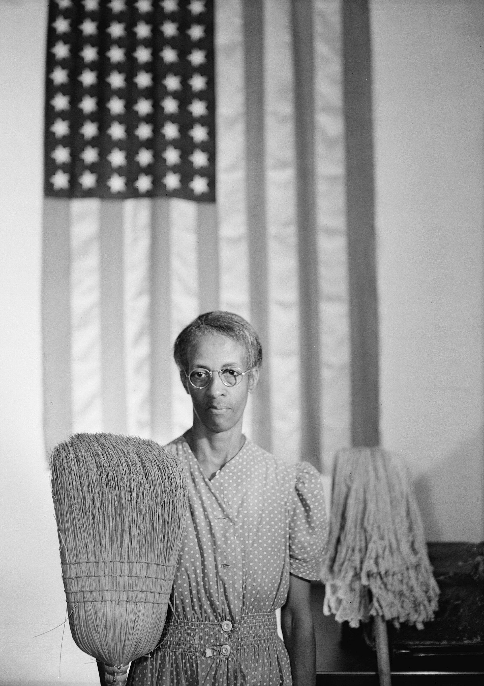

Directions: Study the photograph and the background, then answer the questions.

Background. Gordon Parks took this portrait in 1942 for a federal photography unit. Ella Watson cleaned offices in a federal building in Washington, the capital of a country then at war in democracy's name. Her portrait restages a famous American painting with a Black working woman in place of its farm couple. In the same years, Executive Order 8802 barred discrimination in defense work, the Double V campaign demanded victory over racism at home, and Executive Order 9066 set in motion the removal of about 120,000 people of Japanese ancestry from the West Coast, two thirds of them American citizens, to ten guarded camps.
1. Describe what the photograph shows, and explain what claim its staging makes. Name the woman, her job, and the two objects she holds.
2. A defense plant refuses to hire a qualified Black machinist in 1942. Name the order he can cite, the committee it created, and the limit on what that committee could do for him.
3. State the removal in figures. How many people were removed, what share of them were citizens, and how many camps held them? Name the order the removal rested on and its date.
4. Fred Korematsu stayed in his home and was convicted. What did the Supreme Court hold in 1944, what reason did the majority give, and what did one dissent charge?
1. Describe the photograph and the claim its staging makes. Ella Watson, a Black cleaning woman in a federal building, stands stiffly before a large American flag holding a mop in one hand and a broom in the other. Gordon Parks staged the portrait after Grant Wood's painting "American Gothic," and the staging claims the standing of an American citizen and worker for a woman whose country employed her to clean its offices while barring people of her race from much of its war work. Credit requires her name, her job, and both objects. (Blueprint 11)
2. Name the order, the committee, and its limit. Executive Order 8802 of June 25, 1941, which barred discrimination in defense industries and federal employment. It created the Fair Employment Practices Committee to investigate complaints. The limit is enforcement: the committee could investigate and publicize and could not compel a firm to hire. (Blueprint 11)
3. State the removal in figures, with the order and its date. About 120,000 people of Japanese ancestry were removed, two thirds of them American citizens, and they were held in ten guarded camps in the interior. The removal rested on Executive Order 9066, signed February 19, 1942. All three figures plus the order and date are required for full credit. (Blueprint 12)
4. What did the Court hold, on what reason, and what did a dissent charge? In Korematsu v. United States in 1944 the Court upheld the exclusion of Japanese Americans from the West Coast by six votes to three, accepting it as a military necessity and a pressing public necessity under the war power. Justice Murphy's dissent charged that the exclusion fell into racism and lacked military evidence that could support it. Justice Jackson's warning about a loaded weapon precedent is also full credit. (Blueprint 12)
Teacher note. This check is formative. Question 1 is the observation diagnostic. Students who describe only a flag have not yet read the staging, and the writing task will ask them to argue from documents in the same way. Questions 3 and 4 together predict success on the internment half of the unit test, because they require the figures and the ruling in the student's own words.